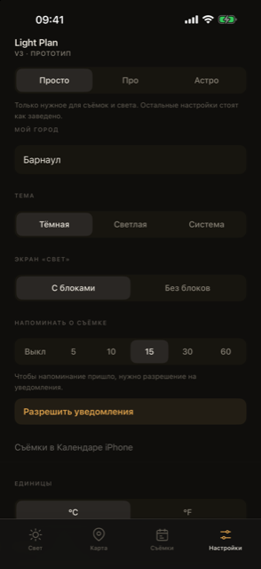
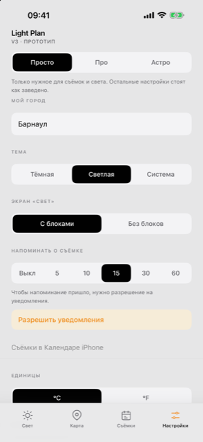
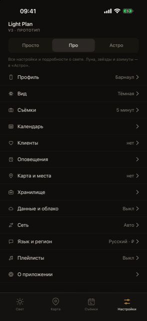
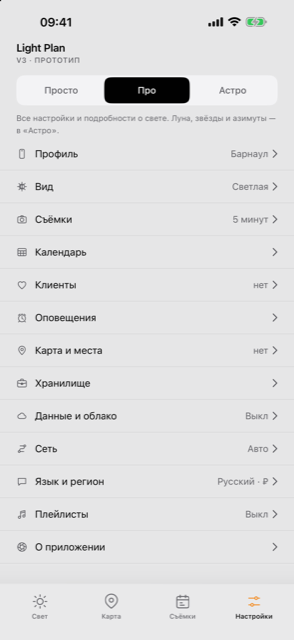
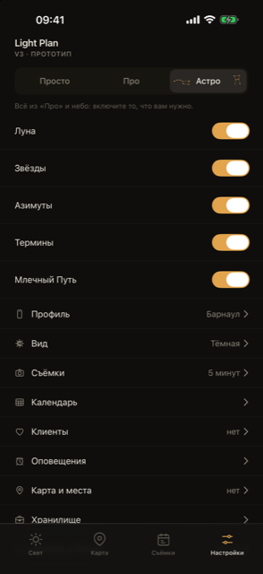
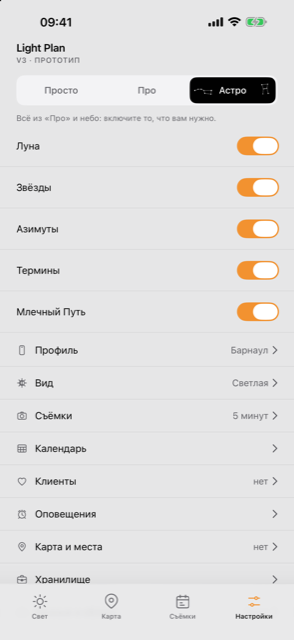

Настройки: блоки со скруглением, аккаунт, рубрики
Шаг 30и.11 · только эскиз, кода в приложении нет · 15.11.2026 · слова Алексея 15.11: «блоки подложки квадратные — сделать как у Apple или Телеги; аватарка, имя, телефон, город; блоки разбиваем на рубрики». Картинки ниже нарисованы по цифрам приложения (палитра Д в светлой теме), иконки — из библиотеки приложения. Аватар — нейтральный круг с инициалами, не фото; номера в примерах вымышленные.
0. Что нужно выбрать
- Форма шапки аккаунта: строка-карточка слева (A), плакат по центру (B) или та же строка, но без страниц-глав (C).
- Радиус блоков: 14 pt (как у карточки съёмки), 20 pt или 26 pt.
- Глубина: оставляем 13 глав-страниц и только раскладываем их по рубрикам (A, B), или собираем всё на одном листе (C).
Моя рекомендация — A: это единственный вариант, где экран становится как у Apple, а 13 глав и их содержимое не трогаем: меньше всего риска перед заморозкой функций.
1. Было (замеры по коду и снимкам симулятора)
Что измерено (из кода, SettingsView, SetItemRow, Palette):
- Корень «Про»/«Астро»: 13 строк-глав, без подложки совсем: строка на всю ширину экрана, поля 24 pt, высота 15+18+16 = 49 pt, разделитель — линия 1 pt цвета
hair2(светлая линия, не прорезь). Радиус блока: 0 pt — их нет. - Лист «Просто»: 13 пунктов, тоже плоско; подложки есть только у сегментов (радиус 12, ползунок 10) и полей (12).
- Блоки приложения в других местах (по числу вызовов
cornerRadiusв UI): 14 pt — 65 мест (карточки съёмки и клиента, пилюли), 12 pt — 43, 16 pt — 37, 10 pt — 30. То есть язык приложения уже говорит «14». - Шапки аккаунта нет. Есть «Мой город» и «Мой телефон» внутри главы «Профиль» (2 тапа вглубь). Имени и аватара в данных нет вообще.
- Режим «Астро» добавляет над главами 5 строк-переключателей неба; «Просто» заменяет главы одним листом.
Референсы Алексея (iOS Настройки и Telegram), только структура: скруглённые блоки на тёмном фоне, у карточек отступ от края экрана ≈ 16 pt, разделители — тонкие прорези с отступом слева от текста, шапка с аватаром, именем и номером. Радиус на глаз ≈ 20–26 pt, точно не мерял.






2. Станет — три варианта
Общее для всех трёх: блоки из sheet на фоне surface, отступ блока от края 16 pt, текст в блоке с полем 16 pt (сейчас 24: текст сдвигается на 8 pt вправо к центру). Разделитель между строками — прорезь: полоса 1 pt цвета страницы (surface), как будто блок надрезан и виден фон; начинается от текста, а не от края; у строки без иконки — от поля 16. Светлых линий нет, ни в тёмной, ни в светлой теме. Заголовок рубрики — существующая подпись SecLabel (10 pt, прописные, разрядка 1,2) над блоком. Иконки строк — те же одноцветные из библиотеки (цветных плиток как у Apple нет, правило «один цвет, не бренд»). Светлая тема — палитра Д как есть: блок #F3F3F5 на странице #E6E6E7 с белой каймой 1,5 pt.
A · «Как у Apple»: карточка аккаунта + рубрики из глав · радиус 14 pt
Шапка: карточка 76 pt: аватар 56 pt слева, имя 17 pt жирным, под ним «+7 … · город» 14 pt, шеврон. Тап открывает страницу «Профиль» (она уже есть — глава «Профиль»): сверху большой аватар 96 pt и «Изменить фото» (выбор из Фото, «Убрать»), поля «Имя», «Телефон», «Город», ниже «ID приложения», «Прежние ID», «Контакты». Тап по самому кружку — сразу выбор фото.
Рубрики (5 + аккаунт): Работа · Время и оповещения · Вид и регион · Данные и сеть · О приложении. «Астро» добавляет блок «Небо» (5 переключателей) сразу под режимом.
Что меняется на деле: корень выглядит как Настройки iPhone, всё внутри глав остаётся как есть; «Просто» — тот же корень, но блоки содержат сегменты и переключатели прямо в строках, как сейчас на листе.
B · «Как Telegram»: плакат + корневые строки-назначения · радиус 20 pt
Шапка: плакат по центру: аватар 88 pt, имя 22 pt, «+7 … · город» 15 pt; справа вверху кнопка «Изм.». Тап по аватару — выбор фото; «Изм.» — та же страница «Профиль», что в A, но сразу в режиме правки полей.
Рубрики (5 + аккаунт): Работа · Календарь и оповещения · Вид и регион · Система · О приложении. Четыре строки поднимаются из глав на корень, как у Telegram: «Контакты» (из «Профиля»), «Мои места» (из «Карты»), «Мудборды» и «Корзина» (из «Хранилища»); «Календарь iPhone» и «Тема» становятся переключателем и сегментом прямо в корне.
Что меняется на деле: шапка занимает ~210 pt — на iPhone 14 первый экран это плакат, режим и одна рубрика; зато три самых частых действия (тема, календарь, контакты) в один тап.
C · «Один лист»: шапка-строка, глав нет, всё в рубриках · радиус 26 pt
Шапка: как в A (строка 76 pt), но поля «Имя / Телефон / Город» правятся прямо в листе-«шторке» по тапу, без страницы. Сверху полоска рубрик-якорей (Съёмки · Календарь · Вид · Карта · Регион · Данные), тап прокручивает к рубрике.
Рубрики (8 + аккаунт): Съёмки и клиенты · Календарь и оповещения · Вид · Карта и места · Язык и регион · Данные и сеть · О приложении. Все 44 строки лежат на одном листе: режим решает, какие видны («Просто» — 18 строк из 44, «Про» — 43, «Астро» — все 44, с небом). Глав-страниц нет, остаются только слои: Клиенты, Контакты, Места, Мудборды, Корзина, Плейлисты, О приложении.
Что меняется на деле: «Про» перестаёт быть 13 страницами; лист длиной в ~3,5 экрана, как сегодня «Просто», но с рубриками.
3. Куда легла каждая строка (ничего не потеряно)
«Режимы»: П — Просто, Пр — Про, А — Астро. Номер — порядковый по коду (44 строки; опись режимов 30г.2 нумерует их иначе). «Было» — глава или лист. В вариантах: рубрика → где живёт строка (страница, если в главе-странице; в строке, если прямо на корне).
4. Что нового в данных, что уже есть
| Поле | Есть? | Где лежит | Откуда берётся |
|---|---|---|---|
| Город | есть | AppSettings.home | поиск города, StartSheet при первом запуске |
| Телефон | есть | снимок, me.phone (+ me.ids, цепочка прежних ID, страна номера) | поле «Мой телефон», вопрос при первой съёмке (30ж.1) |
| Имя | новое | снимок, me.name (рядом с телефоном) | человек пишет сам. Подсказки из Контактов нет: у iOS нет доступа программам к «моей карточке» (из знания iOS, не проверял в проекте) |
| Аватар | новое | файл avatar.jpg (≈ 512×512, ≈ 40–80 КБ) в папке приложения; в снимке только me.avatarAt (метка времени), сама картинка не в light-plan.json | (1) выбор из «Фото» системным окном — разрешение не нужно, как у выбора из Контактов в К7; (2) снимок камерой — нужно разрешение камеры, предлагаю не делать в первой версии; (3) из Контактов — человек выбирает свою карточку в системном окне, берём фото (проверить на сборке, отдаёт ли окно картинку); (4) нет фото — круг с инициалами имени, без имени — иконка диафрагмы |
| Инициалы / заглушка | считаются | не хранятся | из me.name |
Тестовые сборки не пишут личное: файла аватара нет в репозитории и в test_seed.json; в снимках и тестах — только заглушка с инициалами вымышленного имени. Реальное фото живёт на телефоне владельца.
Вопрос про ядро EventOS (поднимаю, не решаю)
Алексей: «аватарки нужны для ядра, там EventOS может использовать их для команд». Пока в приложении всё хранится на устройстве, облако выключено (итерация 31), номер телефона = «ID приложения». Чтобы заложить поле правильно, нужны ответы ядра:
- Что ядру нужно: сама картинка или только ссылка/хеш? От этого зависит, остаётся ли аватар в телефоне или уходит на сервер. Мой вариант по умолчанию: аватар остаётся в телефоне, в ядро уходит только когда появится облако и согласие.
- Размер и формат для команды: предложение — квадрат 256 px, JPEG ≤ 30 КБ для сети, 512 px локально. Ядру годится?
- Кто видит аватар: только члены команды или и клиенты? Лицо — персональные данные; для зеркала в России (Yandex Cloud) и мира это два разных режима хранения, нужно решение до первой отправки.
- Смена номера: ID сейчас строится из номера, цепочка прежних ID уже хранится. Аватар должен ехать за человеком по этой цепочке — ядро ключует людей по ID приложения или по своему идентификатору?
5. Что дальше
Жду выбор: форма шапки (A/B/C), радиус (14 / 20 / 26) и можно ли в первой версии аватара обойтись выбором из «Фото» (без камеры). После выбора — отдельная итерация со снимками «до/после» по цифрам (make shots), в обеих темах и трёх режимах.